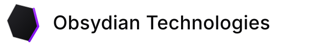

obsydian-mark.svgthe mark, 32 unit grid
obsydian-mark.svgthe mark, 32 unit grid
obsydian-logo.svgfor dark grounds, where the font cannot load
obsydian-mark.svgthe mark, 32 unit grid
obsydian-logo.svgfor dark grounds, where the font cannot load
Geometry. Face M11 3 L23 6 L26 18 L20 28 L9 25 L5 14 Z. Edge M23 6 L26 18 L20 28. Face gradient surface-3 to obsydian, diagonal. Edge violet-hover, violet, violet-pressed, top to bottom. Outline bone at 22%.
Lockup. The shard, 8px, then "Obsydian Technologies" in General Sans 600 at -0.02em: 22px and 17px in the nav, 20 and 15 once scrolled, 24 and 17 in the footer.
Never. Redraw the shard, invent a facet, put it on a gradient square, rotate it, recolour the edge, or set the wordmark in another weight. The splash once drew a cube-like hexagon; that is the mistake this rule exists for.
The orb. The hero's 3D obsidian orb is a scene, not the logo. Its no-WebGL fallback is assets/shard.svg, a faceted stone drawn for that job; it is not a second logo.